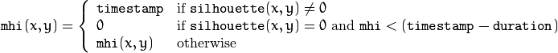
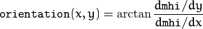

Motion templates is alternative technique for detecting motion and computing its direction. See samples/motempl.py.
Updates the motion history image by a moving silhouette.
| Parameters: |
|
|---|
The function updates the motion history image as follows:

That is, MHI pixels where the motion occurs are set to the current timestamp , while the pixels where the motion happened last time a long time ago are cleared.
The function, together with calcMotionGradient() and calcGlobalOrientation() , implements a motion templates technique described in [Davis97] and [Bradski00].
Calculates a gradient orientation of a motion history image.
| Parameters: |
|
|---|
The function calculates a gradient orientation at each pixel as:

In fact, fastAtan2() and phase() are used so that the computed angle is measured in degrees and covers the full range 0..360. Also, the mask is filled to indicate pixels where the computed angle is valid.
Note
Calculates a global motion orientation in a selected region.
| Parameters: |
|
|---|
The function calculates an average motion direction in the selected region and returns the angle between 0 degrees and 360 degrees. The average direction is computed from the weighted orientation histogram, where a recent motion has a larger weight and the motion occurred in the past has a smaller weight, as recorded in mhi .
Splits a motion history image into a few parts corresponding to separate independent motions (for example, left hand, right hand).
| Parameters: |
|
|---|
The function finds all of the motion segments and marks them in segmask with individual values (1,2,...). It also computes a vector with ROIs of motion connected components. After that the motion direction for every component can be calculated with calcGlobalOrientation() using the extracted mask of the particular component.
| [Bradski00] | Davis, J.W. and Bradski, G.R. “Motion Segmentation and Pose Recognition with Motion History Gradients”, WACV00, 2000 |
| [Davis97] | Davis, J.W. and Bobick, A.F. “The Representation and Recognition of Action Using Temporal Templates”, CVPR97, 1997 |